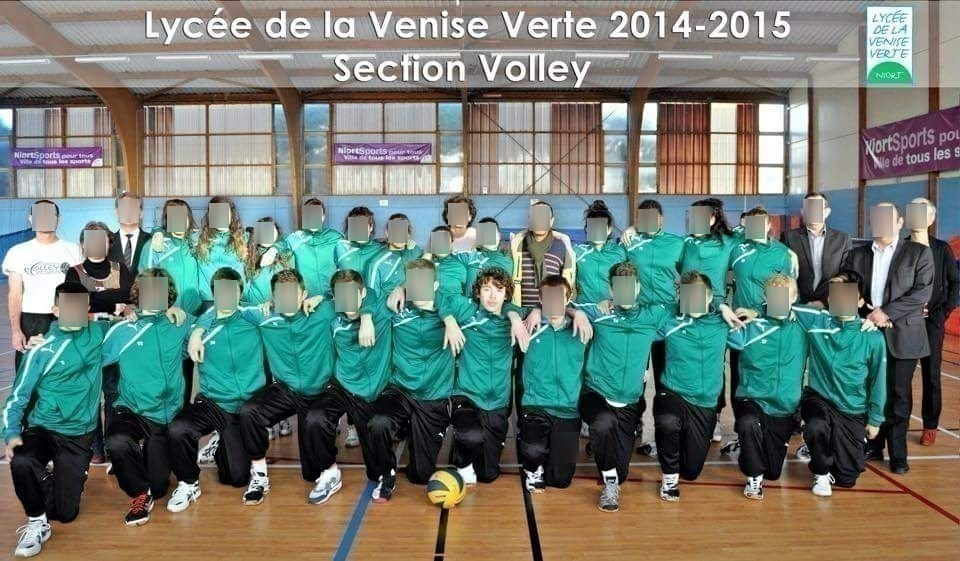
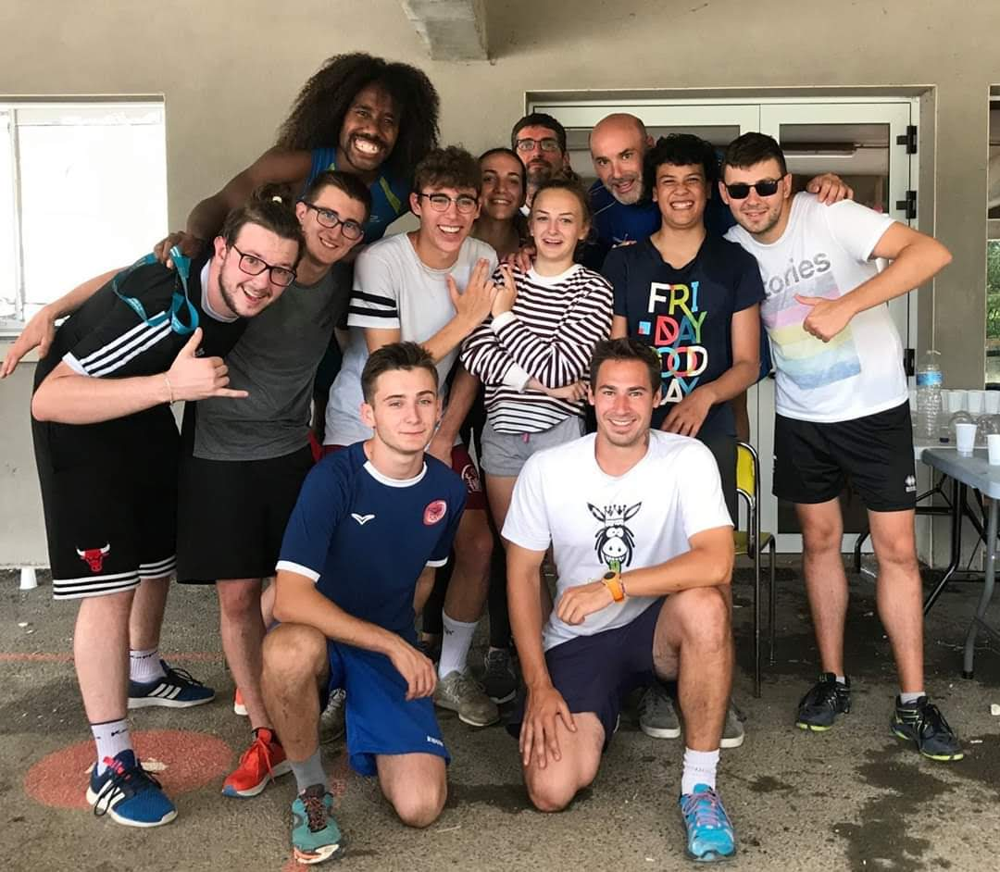
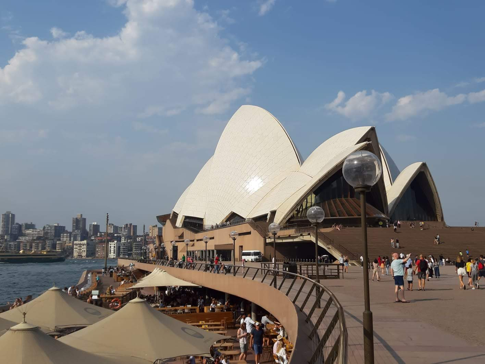

Mon Parcours
Découvrez les étapes clés de ma formation en science des données et mes expériences marquantes
Baccalauréat Scientifique
Spécialité Physique-Chimie
Lycée La Venise Verte en Sport étude volley (Seconde), Niort
Lycée Aliénor d'Aquitaine (Premiere et Terminal), Poitiers
Service Civique au Comité de la Vienne de volley
Pendant mon service civique, j'ai participé à plusieurs missions autour du sport et plus particulièrement du volley-ball
- Encadrement des entraînements pour adultes et enfants
- Organisation d'événements de volley pour adultes et enfants
- Animation dans un centre aéré spécialisé dans le sport
Cette expérience m'a permis de gagner en organisation, de prendre des responsabilités et de renforcer mes qualités relationnelles auprès d'enfants comme d'adultes.
Ouverture internationale : Australie
J'ai passé plusieurs mois en Australie, combinant un rôle d'Au pair et un voyage en autonomie. Pendant six mois, j'ai travaillé au sein d'une famille australienne où j'ai développé des compétences essentielles comme la gestion du quotidien, la communication interculturelle, la responsabilité et l’adaptabilité. Ensuite, j'ai voyagé de manière autonome pendant trois à quatre mois, ce qui m'a permis de renforcer mon sens de l'organisation, ma capacité à prendre des initiatives et à m'adapter à de nouveaux environnements.
BTS Tourisme Option International
Au cours de mon BTS Tourisme, j’ai consolidé des compétences clés en conception d’offres touristiques, gestion de la relation client et communication multilingue. L’option International m’a permis de mieux comprendre les enjeux du tourisme à l’échelle mondiale et d’acquérir une réelle capacité d’adaptation face à des publics et des partenaires variés. Cette formation a renforcé mon envie de travailler dans un environnement international et d’accompagner des projets tournés vers l’échange et la découverte culturelle.
- Accueil et conseil client en français et en langues étrangères
- Conception et organisation de prestations touristiques
- Adaptabilité et communication dans un contexte multiculturel
Stage à l'international
Durant mon BTS j'ai eu la chance de faire deux stages d'environ 3 mois chacun à l'international. Le premier à Lisbonne dans l'entreprise Occubo qui gèrent différents site touristiques et spectacle et le deuxieme à Copenhague dans le tour operator Vision Of Scandinavia.
Ces deux expériences ont été extrêmement enrichissantes pour mon parcours professionnel. Elles m'ont permis de découvrir la réalité du terrain, d'améliorer considérablement mon niveau d'anglais, ainsi que de développer de nombreuses compétences professionnelles. C’est particulièrement au Danemark que j'ai pu renforcer mes savoir-faire, notamment en matière de gestion de la relation client, de communication interculturelle, ainsi que dans l’organisation et la vente de prestations touristiques. Cette immersion dans un environnement international m’a également appris à travailler de manière autonome, à prendre des initiatives et à m'adapter à des contextes professionnels variés.
- Prise d'initiative et autonomie
- Maîtrise de l'anglais professionnel
- Gestion d'organisation et de planning
Operation Coordinator Visiof Of Scandinavia
Après l'obtention de mon diplôme, j'ai eu l'opportunité de rejoindre à nouveau Vision of Scandinavia, cette fois-ci en tant qu'employé sur le marché français. J'y ai assuré le suivi opérationnel de groupes francophones et multilingues : organisation des hôtels, des restaurants, des guides et des activités. J'ai également participé aux opérations du marché international, renforçant mes compétences en communication interculturelle et en gestion de projets complexes. Le travail en équipe était essentiel, en collaboration quotidienne avec les services ventes, production, comptabilité, ainsi qu'avec des partenaires locaux et internationaux. Mes missions intégraient aussi le suivi comptable, la gestion des contrats fournisseurs, et l'entretien des relations commerciales avec nos agences partenaires en France et à l'étranger. Cette expérience m’a permis de développer une grande rigueur organisationnelle, un excellent sens du service client, une forte capacité d’adaptation et une véritable aisance à évoluer dans des environnements multiculturels.
- Gestion de la relation fournisseurs
- Suivi administratif et comptable
- Gestion de projets touristiques
Différents emplois dans l'évenementiels et dans l'animation
Après mon expérience à Copenhague, j'ai décidé de changer de voie. En attendant ma réorientation, j'ai travaillé dans l'événementiel et en tant que saisonnier, ce qui m'a permis de développer des compétences variées en gestion, animation et service client. Dans l'événementiel, j'ai non seulement participé à l'organisation d'événements, mais j'ai aussi animé des soirées pour des entreprises, garantissant une expérience réussie pour les participants. Ces missions m'ont appris à travailler sous pression, à gérer des équipes et à m'adapter aux besoins des clients dans un environnement dynamique. En tant que saisonnier dans un vélo rails, j'ai géré des groupes de visiteurs, assuré leur sécurité et répondu à leurs attentes dans un cadre extérieur. Ce rôle a renforcé mes compétences en communication, en organisation et en réactivité face aux imprévus.
- Animation d'événements
- Service client et accueil
- Adaptabilité et réactivité
BUT Science des données
Après plusieurs années d’expériences variées, en France et à l’étranger, j’ai décidé de reprendre mes études pour m’orienter vers un domaine qui me passionne profondément : la science des données. Cette formation me permet de développer des compétences solides en analyse, traitement et visualisation de données, ainsi qu’en programmation (notamment en Python et SQL).Ce choix représente une nouvelle étape importante dans mon parcours, marquée par une forte motivation à apprendre, une vraie curiosité intellectuelle et l’envie de mettre mes compétences au service de projets concrets, dans un environnement technique et stimulant.